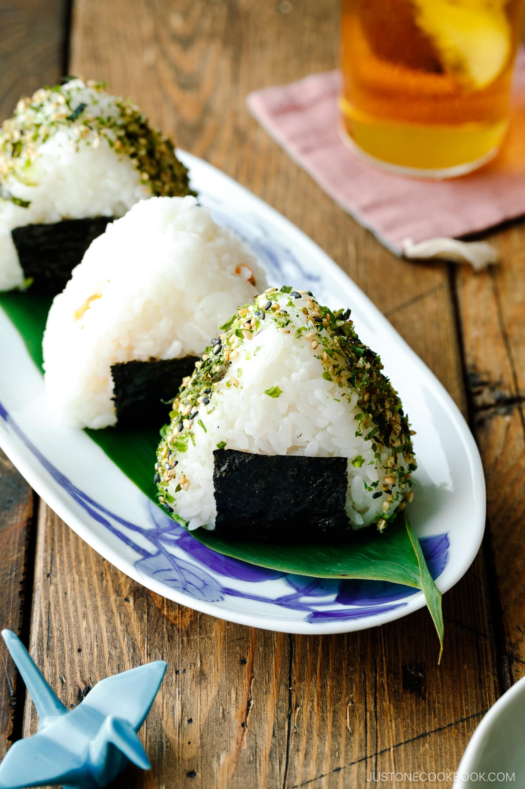

Onigiri

Onigiri, or Japanese rice balls are an ideal snack stuffed with a variety of fillings and flavors
Ingredients:
- Japanese Short-Grain Rice
- Nori Seaweed
- Optional Fillings
- shake (salted salmon)
- umeboshi (Japanese pickled plum)
- okaka (bonito flakes moistened with soy sauce)
- kombu (simmered kombu seaweed)
- tuna mayo (canned tuna with Japanese mayonnaise)
- mentaiko or tarako ((spicy) salted cod roe)
- furikake (rice seasonings to sprinkle all over)
- anything you believe can taste good inside the onigiri! Chicken, shrimp, get creative!
STEPS:
- Cook short-grain rice with a rice cooker, pot over the stove, Instant Pot, or donabe.
- Using a mold or your hands, make rice balls. Don’t forget to salt rice balls for food safety. Fillings are optional.
- Wrap the rice ball with nori seaweed.